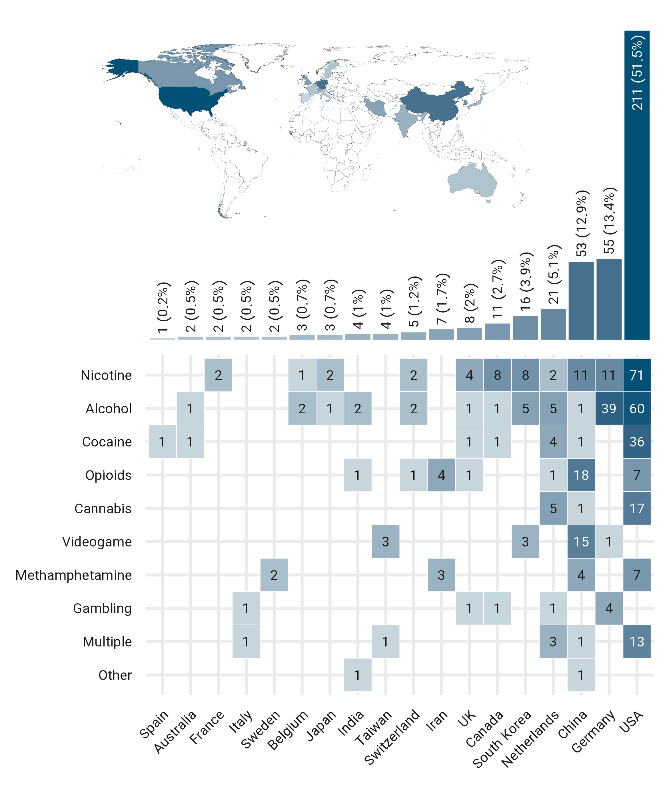

Summary
Four major steps in the validation of fMRI drug cue reactivity (FDCR)-derived biomarkers
![Four major steps in the validation of fMRI drug cue reactivity (FDCR)-derived biomarkers. After an FDCR-derived biomarker is precisely specified, the biomarker’s context of use should be decided. After the analytical and clinical validation of the biomarker and cost-benefit analysis, the compiled evidence is presented for regulatory approval. The FDA evaluates the use of biomarkers for drug development through a biomarker qualification process involving the submission of a Letter of Intent, a Qualification Plan, and a Full Qualification Package, while use of FDCR-derived biomarker in preclinical or clinical contexts requires the endorsement of a constellation of other institutions](fig/Figure%201.png)
Four major steps in the validation of fMRI drug cue reactivity (FDCR)-derived biomarkers. After an FDCR-derived biomarker is precisely specified, the biomarker’s context of use should be decided. After the analytical and clinical validation of the biomarker and cost-benefit analysis, the compiled evidence is presented for regulatory approval. The FDA evaluates the use of biomarkers for drug development through a biomarker qualification process involving the submission of a Letter of Intent, a Qualification Plan, and a Full Qualification Package, while use of FDCR-derived biomarker in preclinical or clinical contexts requires the endorsement of a constellation of other institutions
Global contribution to fMRI cue-reactivity studies

Global contribution to fMRI cue-reactivity studies.
Number of fMRI cue-reactivity studies in each country, broken down by the type of addictive substance/ behavior. “Multiple” stands for those studies that included more than one type of addictive substance/ behavior.
fMRI cue-reactivity studies across years

fMRI cue-reactivity studies across years.
Number of fMRI cue-reactivity studies each year from 1998 till the end of 2023, broken down by the type of addictive substance/ behavior. “Multiple” stands for those studies that included more than one type of addictive substance/ behavior.
Task and study design features of fMRI drug cue reactivity studies
![Task and study design features of fMRI drug cue reactivity studies. a. Number of time points in FDCR studies. Seventy-four studies scanned participants at two time points and five at three time points. b. Boxplot representing the distribution of median inter-scan intervals (in days), for FDCR studies with more than one scanning session. Eleven studies scanned individuals within the same day (interval = 0 days). c. Main FDCR task design type. d. Boxplot of the distribution of FDCR task durations. e. FDCR studies broken down by stimulus and substance/ behavior type. f. Paradigms combined with FDCR tasks in 44 studies in the database.](fig/Figure%203.png)
Task and study design features of fMRI drug cue reactivity studies. a. Number of time points in FDCR studies. Seventy-four studies scanned participants at two time points and five at three time points. b. Boxplot representing the distribution of median inter-scan intervals (in days), for FDCR studies with more than one scanning session. Eleven studies scanned individuals within the same day (interval = 0 days). c. Main FDCR task design type. d. Boxplot of the distribution of FDCR task durations. e. FDCR studies broken down by stimulus and substance/ behavior type. f. Paradigms combined with FDCR tasks in 44 studies in the database.
Participants in FDCR studies

Participants in FDCR studies. The Sankey diagram represents the number of participants in FDCR studies across study years, gender, population type, potentially addictive drugs and behaviors, and interventions.
Biomarkers in FDCR studies
![Biomarkers in FDCR studies. a. fMRI cue-reactivity studies which can lead to the development of a biomarker, broken down by substance or behavior of interest in each study. Note that numbers do not sum to 357 and percentages do not sum to 100 since some studies fit no biomarker framework, for example cross-sectional studies with a single group of participants or those that include only non-clinical populations without follow-up, while some studies fit multiple categories. b. Dumbbell plot showing the number of significant and non-significant biomarker-related tests.](fig/Figure%205.png)
Biomarkers in FDCR studies. a. fMRI cue-reactivity studies which can lead to the development of a biomarker, broken down by substance or behavior of interest in each study. Note that numbers do not sum to 357 and percentages do not sum to 100 since some studies fit no biomarker framework, for example cross-sectional studies with a single group of participants or those that include only non-clinical populations without follow-up, while some studies fit multiple categories. b. Dumbbell plot showing the number of significant and non-significant biomarker-related tests.